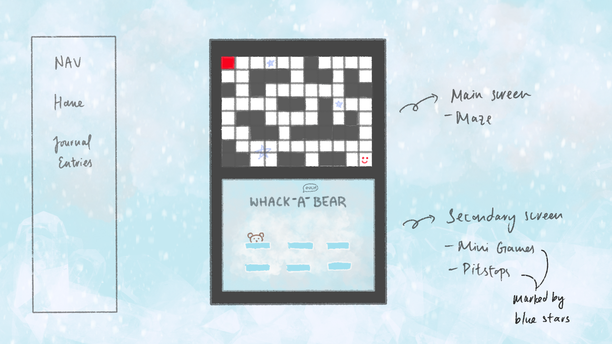
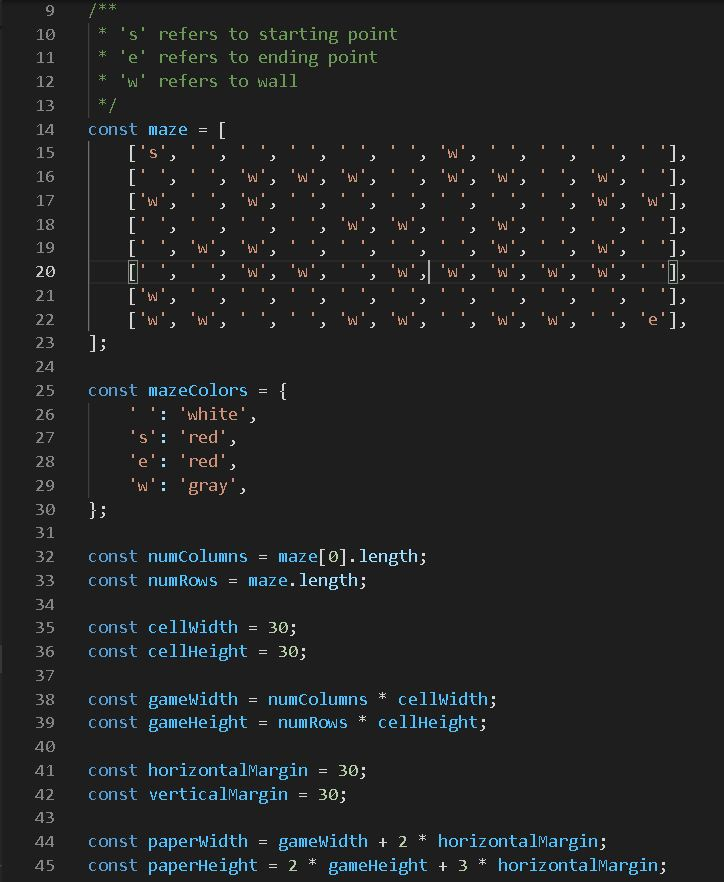

Journal Entry 01
For my final project, I am thinking of doing an interactive game in the form of a simple maze, using mouse clicks to direct player movement. Since a maze game alone might not be enough to showcase the variety of things we have learned in class, I also thought about incorporating mini games which the player will encounter while making their way out of the maze.
I originally thought about simply doing a whack-a-mole game which the prof mentioned, since it is of a manageable difficulty to build with the fundamental skills we have picked up thus far (timers, mouseclicks, loops, etc.). However, it felt a little lacking to me somehow to center my whole final project on a whack-a-mole game, so I opted to simply make it a part of the project, as one of the mini games to include within the maze.
I haven't given too much thought about what my other mini games will be, but ideally, they should showcase the different things we have learned thus far. I roughly thought about making a game of chess (with my own rules) as well, but I am not too sure how time-consuming that would be.
While I haven't really started working on the final project (as evident from this super barebones final project page...) I am pretty excited to see how far I can take this! I would like the game to at least look somewhat visually appealing as well, so I think the visual design aspects would be quite a huge time sink. Ultimately, I think I will be able to learn a lot in the process, and I am really looking forward to embarking on this project! :)
Journal Entry 02
Currently, I am in the midst of finalizing my game layout. Visually, I am thinking of creating a virtual
DS with a main screen and a secondary screen. How this works is that the player would predominantly be
interacting with the main screen to get through the maze, and everytime a minigame pitstop is encountered,
the minigame will 'activate' and be playable on the secondary screen.

However, I foresee that my technical abilities may still be too lacking to implement something like this, so for now, I will simply focus on building the maze game. If I am unable to flesh out the virtual DS aspect due to time constraints, at the very least, an MVP version would be simply the maze game itself with a timer and other specified must-have components in the assignment guidelines.
Graphics wise, I am thinking of creating my own character and background art using software such as Photoshop (for raster images) or Illustrator (for svg images), since there is no mention of having to strictly stick to using Raphael in the instructions given. While there has been an emphasis on using svg graphics, I personally like the pixel game art look which leans more towards raster graphics and might just go with this more heavily in terms of character design... hopefully that's okay!
Journal Entry 03
For the main layout of my maze, I found this awesome reference code using arrays to set things up. I decided to use arrow keys to control player movement instead and since we didn't learn much about keypress events in class, I spent some time camping on StackOverflow and various sites to figure out how to get my character moving using event.key, based on this reference code .
Going forward, I would need to implement a timer to track the amount of time the player took to complete the maze. I would also like to start working on creating custom graphics to make the game look more visually appealing. Some other extras to include would be background music and maybe a sound effect that would play when the player has reached the ending point.
Some Working Code:
Journal Entry 04
For this week's update, I mainly created some custom graphics to use as character and background sprites, using Paper.image to embed them. I also decided to scrape the mini game aspect due to time constraints, and subsequently removed the virtual DS layout even though I really liked the idea :( As such, I had to adjust the game dimensions accordingly.
Other updates include:
- adding a Start/Reset button so that I can properly track the duration taken to complete the maze from start to end
- resetting player position to the starting point once player has completed the game.
For now, most of the basic requirements have been checked off, and the only major requirement left is to implement a loop somewhere in the game. I'm thinking of adding moving balls as obstacles that the player has to dodge while trying to get to the end point. The current timer you see is also simply a html text placeholder so once I find some time I'll be ripping and modifying my old timer code from past challenges :'D